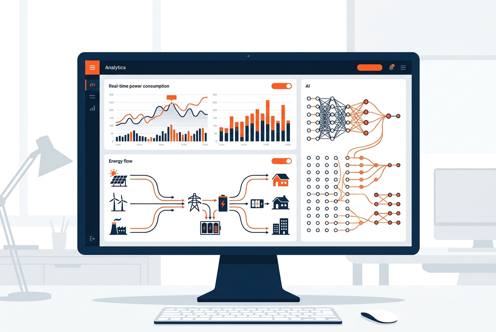

شبکههای توزیع برق با افزایش پیچیدگی و گسترش مصرفکنندگان، نیازمند سیستمهای تشخیص خطای هوشمند و بلادرنگ هستند. روشهای سنتی مبتنی بر آستانهگذاری ساده، دیگر پاسخگوی نیازهای شبکههای مدرن نیستند. در این مقاله، رویکرد KAP در استفاده از الگوریتمهای یادگیری عمیق برای تشخیص آنی خطاهای شبکه را بررسی میکنیم.
چالشهای تشخیص خطا در شبکههای توزیع
شبکههای توزیع برق به دلیل ساختار شاخهای، تنوع بار مصرفی و شرایط محیطی متغیر، با چالشهای متعددی در زمینه تشخیص خطا مواجه هستند. اتصال کوتاه، نشتی جریان، اضافهبار و عدم تعادل فاز از جمله خطاهای رایج هستند که در صورت عدم شناسایی به موقع، میتوانند خسارات جبرانناپذیری ایجاد کنند.
سیستم تشخیص خطای KAP با دقت ۹۵ درصد و زمان تشخیص کمتر از ۲ ثانیه، عملکردی بسیار بالاتر از سیستمهای سنتی ارائه میدهد.
معماری مدل یادگیری عمیق KAP
تیم تحقیقات KAP از ترکیب شبکههای عصبی کانولوشنی (CNN) و شبکههای بازگشتی (LSTM) برای تحلیل سیگنالهای الکتریکی استفاده میکند. CNN برای استخراج ویژگیهای فرکانسی و LSTM برای تحلیل الگوهای زمانی به کار گرفته شدهاند.
مراحل پردازش داده
۱. جمعآوری داده خام از سنسورهای CT با نرخ ۵۰kHz
۲. پیشپردازش و نرمالسازی سیگنال
۳. استخراج ویژگی توسط لایههای CNN
۴. تحلیل زمانی توسط LSTM
۵. طبقهبندی نوع خطا و ارسال هشدار
نتایج و عملکرد
مدل KAP روی مجموعه دادهای شامل ۵۰۰,۰۰۰ نمونه واقعی از شبکههای توزیع ایران آموزش دیده و نتایج زیر را کسب کرده است:
• دقت کلی تشخیص: ۹۵.۳٪
• نرخ تشخیص اتصال کوتاه: ۹۸.۱٪
• نرخ تشخیص نشتی جریان: ۹۳.۷٪
• نرخ هشدار کاذب: کمتر از ۲٪
• کاهش زمان قطعی: ۶۰٪